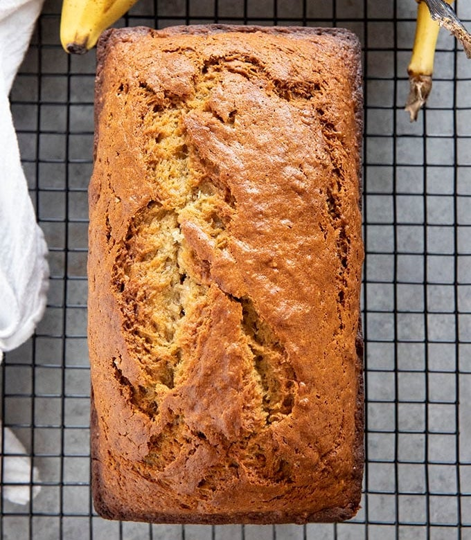

Banana Bread
Prep Time: 15 mins
Cook Time: 1 hr
Total Time: 1 hr 15 mins
Servings: 1 loaf
To make the very best banana bread that comes out super moist, it is important to start out with those ugly, overripe bananas!
Cut the loaf into slices and serve to friends and family.
Ingredients
- 1 stick (1/2 Cup) butter
- 3 large ripe bananas
- 2 large eggs
- 1 teaspoon vanilla extract
- 2 cups all purpose flour
- 1 cup granulated sugar
- 1 teaspoon baking soda
- ½ teaspoon salt
- ½ teaspoon cinnamon
Instructions
- Preheat oven to 350 degrees. Spray a loaf pan with non-stick cooking spray or grease with butter and set aside.
- Add the stick of butter to a large bowl and microwave for 1 minute, or until melted.
- Add the bananas to the same bowl and mash with a fork.
- Add the vanilla extract and egg to the bowl and use the same fork to mash and stir until no yellow streaks of egg remain.
- In a second large bowl whisk together the flour, sugar, baking soda, salt, and cinnamon.
- Add the dry ingredients to the wet ingredients and mix together with a spatula just until combined.
- Pour the batter into prepared loaf pan and bake for 45-55 minutes until a toothpick inserted in the center of the bread comes out clean.